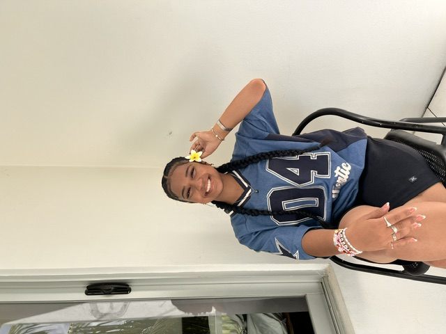
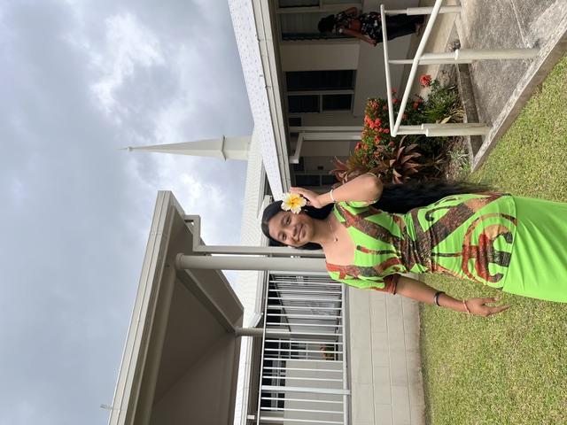

Titilia is the oldest sibling and a true leader in the family. She is loving, caring and always looks out for the family. She sets a good example for her younger siblings through her actions and is someone they can depend on for guidance and support.

Middle Child
Elizabeth
Elizabeth is the middle child in the family. She is adventurous, energetic and always willing to try new things. She has a strong love for netball and enjoys being active. She also loves exploring new places, going on adventures and making unforgettable memories.

Youngest Sibling
Oyleen
Oyleen is the youngest in the family and brings lots of fun wherever she goes. She loves doing TikTok, creating fun moments and dancing. She is playful, full of life and always knows how to bring laughter and entertainment to the family.